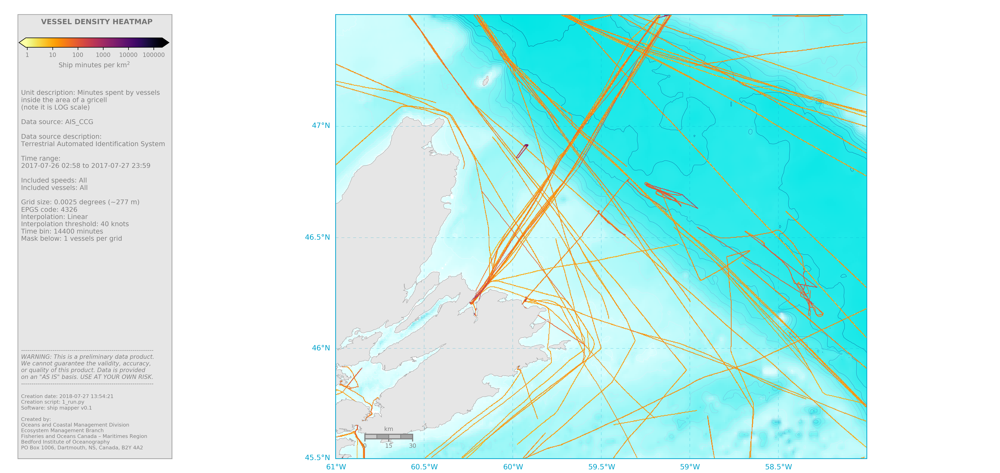

3. St_Anns_Banks_AIS¶
Executing 1_run.py (shown below) will produce the following map.
{kind=link}
Note that before you execute 1_run.py, you need to ensure that the
.basemap and .grid files were made before and are available (they
should be in the /grids/St_Anns_banks directory). If not,
you have to make them using make_basemap.py
Also you need to ensure that the info file (i.e. info_1_run.p) was priorly made
and is available. If not, you have to make it with make_info.py
Below are the contents of 1_run.py
import ship_mapper as sm
# Load info object
info = sm.load_info('1_run')
# Change or define some items within info
info.sidebar.included_vessel_types = 'All'
info.grid.interp_threshold = 40 #knots
info.maps.mask_below = 1
info.maps.textbox = True
info.maps.cbarmin = 'auto'
info.maps.cbarmax = 'auto'
# ----------------------------------------------------------------------
#Convert original data to nc
sm.bulk_convert_to_nc(info.converter,
path_to_data_in=info.dirs.data_original,
overwrite=False)
# Filter and grid all input files
for file_in in sm.get_all_files(info.dirs.data_nc):
# Get file name
file_name = sm.get_filename_from_fullpath(file_in)
# Filter data (spatial trimmer)
filtered_data = sm.spatial_filter(file_in, info)
# Project "dots" into a grid
sm.gridder(info, filtered_data, file_name, overwrite=True)
# Merge grids
sm.grid_merger(info)
# Make map
m = sm.map_density(info, cmap='inferno_r',sidebar=True)
# Make shapefiles
#sm.mergedgrid_to_shp(info)